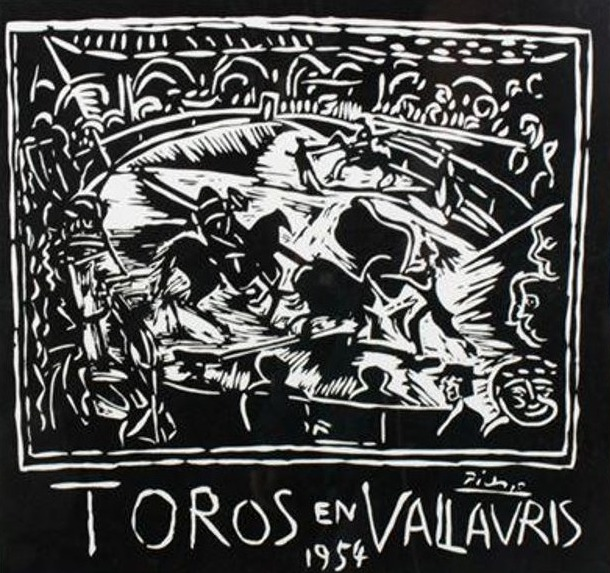

Works
of Heart
Gala & Auction
The Invitation
John Pellegrene cordially invites you to a gala of fine art & philanthropy featuring Father Jerome Tupa.
Discover an extraordinary collection of original paintings by Father Jerome Tupa—Benedictine monk of Saint John's Abbey and Artist in Residence at Saint John's University—whose bold, vibrant oils reflect more than fifty years of artistic pilgrimage. The evening also features illuminated pages from The Saint John's Bible, masterworks by Richard Bresnahan, an original work by Pablo Picasso, an original painting by Yusuf Mirumbe, and exceptional fine art from distinguished private collections.
Proceeds from the evening will support the enduring mission of Saint John's Abbey.
Save the date
102226
The Hutton House 10715 South Shore DriveMedicine Lake, Minnesota 55441
952-470-0788
4:00 p.m. – 9:00 p.m.
- Cocktail hour & art preview
- Dinner by

- Auction
- Entertainment — Amy Grant
Meal choice available with ticket purchase. View the menu
The Sale
Featured Lots
 Father Jerome Tupa
Father Jerome Tupa
Also On Offer
Beyond the Paintings

The Saint John's Bible
Illuminated pages from the first handwritten and illuminated Bible commissioned by a Benedictine abbey in five hundred years.

Bresnahan Pottery
Wood-fired stoneware from Saint John's Pottery, fired in the largest wood-burning kiln in North America.

An Original Picasso
Toros en Vallauris — an original Picasso linoleum print, its verso bearing a handwritten certification by Pierre Raybaud, who witnessed the making of the block.

The Cause
Every Lot Gives Back
Every dollar raised on October 22 supports the enduring mission of Saint John's Abbey — a community of prayer, hospitality and art in Collegeville, Minnesota.